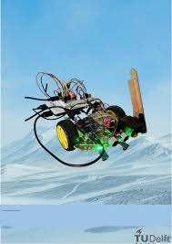
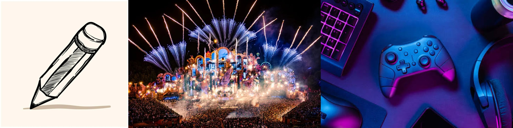
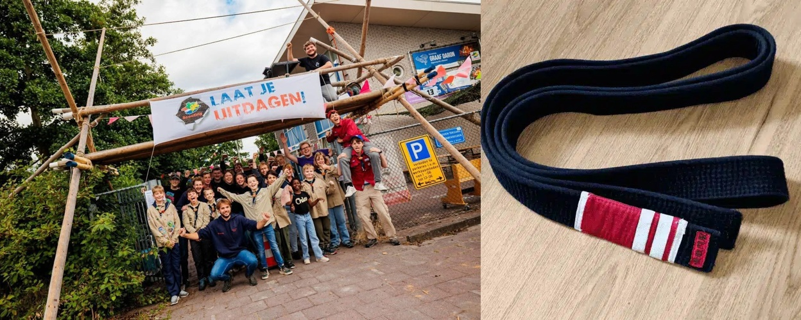

Schoolproject
Naam project
als ik een project gedaan heb komt het hier
Bekijk op GitHub →DOSSIER 01
Welkom op mijn CV website, ik ben Desmond en studeer software developer. Ik heb een lang lontje en kan goed omgaan met stressvolle situaties. Ik woon in Alkmaar en hoop graag van u te horen.
DOSSIER 02
DOSSIER 03
REFERENTIES
• Jeroen,
+31235303313
jezonneveld@novacollege.nl
• Wouter,
+31235303099
whezel@novacollege.nl
Liever een document om te printen of door te sturen? Download hieronder mijn cv als PDF.
DOSSIER 04
School-, stage- en eigen projecten.
Schoolproject
als ik een project gedaan heb komt het hier
Bekijk op GitHub →
Eigen project
als ik een eindproject gedaan heb komt het hier.
Bekijk project →DOSSIER 05
maand jaar — maand jaar
Ik moet nog een stage doen als ik hem gedaan heb dan komt het hier te staan.
DOSSIER 06

Gaming, Ik game graag op de pc, vooral survivalgames zoals Minecraft, RimWorld en Terraria — bouwen is voor mij het leukste onderdeel. Speel casual, soms alleen om te ontspannen, soms met vrienden. Op termijn zou ik weleens een eigen game willen maken, wat ook mooi aansluit bij mijn interesse in software development. Tekenen, Ik teken vooral anime, auto's en dieren, maar pak ook andere onderwerpen op als ik er zin in heb. Heb een tekentablet, maar werk eigenlijk liever op papier — daar zit meer gevoel in. Ik deel mijn tekeningen niet online. maar je kan vraagen of je het kan zien. Uitgaan / feestjes, Ik ga graag naar festivals, met een voorkeur voor house en techno, maar ik luister eigenlijk alles — rock, metal, rap, noem maar op. Volgens mij is er gewoon goede en slechte muziek, niet goede en slechte genres. Regel ook regelmatig zelf een uitje voor mezelf en mijn vrienden.

Scouting Sinds mijn dertiende actief bij de scouting, waar ik heb geleerd om samen te werken, verantwoordelijkheid te nemen en dingen te organiseren tijdens kampen en activiteiten. Dit heeft mijn organisatievermogen en teamgevoel flink versterkt. Jiu Jitsu Beoefen al sinds mijn zevende jiu jitsu, een sport die discipline, doorzettingsvermogen en probleemoplossend denken vraagt — je moet steeds strategisch reageren op je tegenstander. Naast de fysieke uitdaging is het goed voor me om fit te blijven.